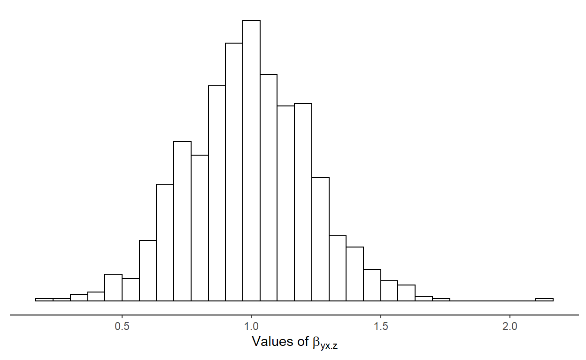
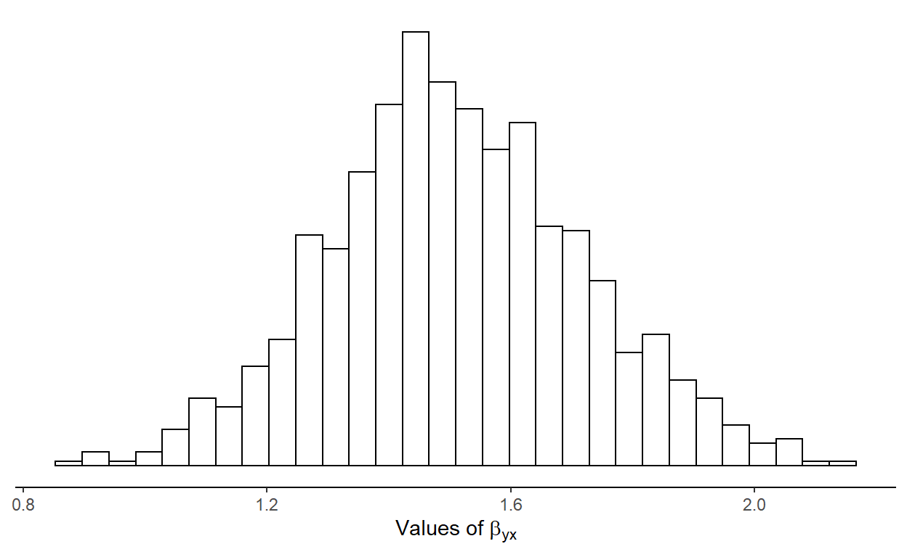
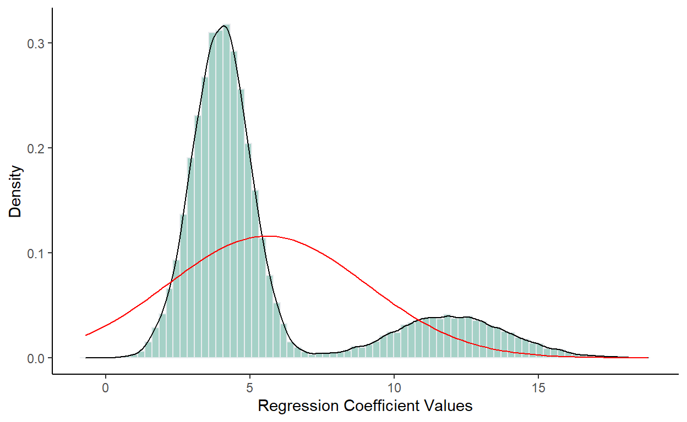
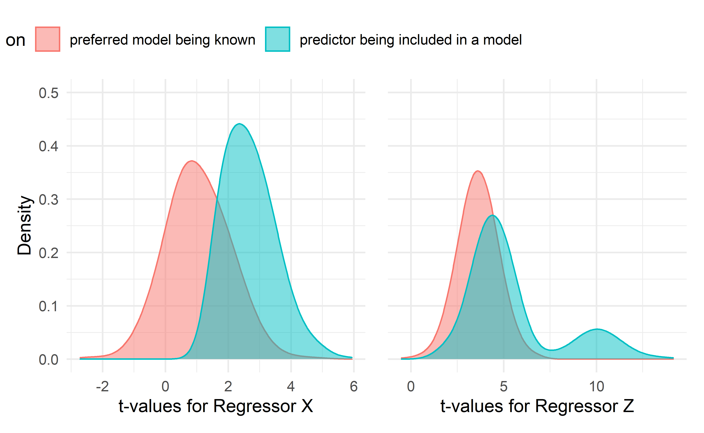
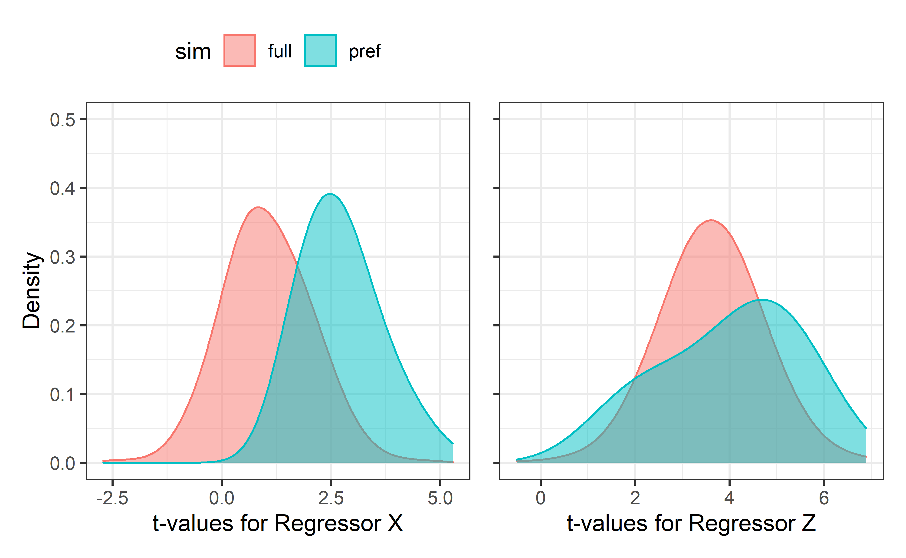
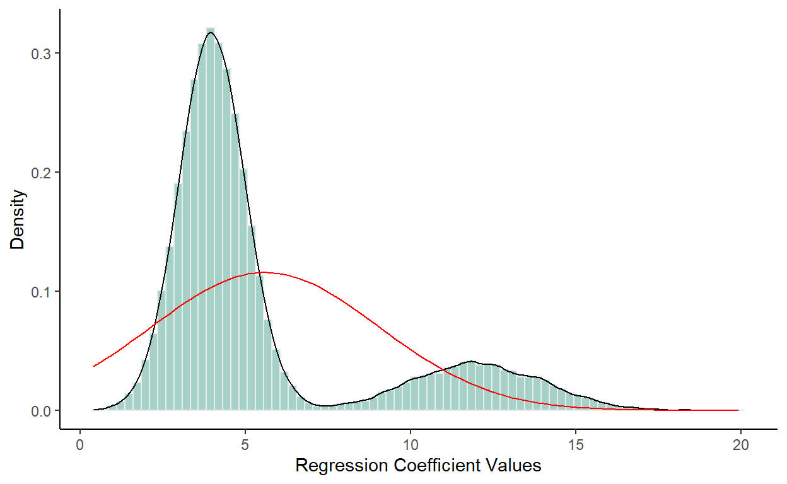

A short description of the post.
Much of the current research questions on the behavioral and social sciences are investigated using statistical models (Flora, 2017). Models are simplified translations of a reality to mathematical expressions; it’s aim is express how the data were generated. Regression based models are vastly employed on empirical research and often used to estimate causal effects (Berk, 2010). However, to perform causal modeling, researchers must specify a “correct” model (i.e. an accurate model of the data generating process) prior to data collection and use the obtained data only to estimate regression coefficients (see Berk (2010) for a further discussion). In practice, researchers usually have only a vague idea of the right model to answer their research questions or even if such model can be estimated. Often, what is framed as statistical inference or causal modeling is in fact a descriptive analysis; what Berk (2010) name as Level I Regression Analysis.
To determine which variables should be included in the model, a common solution is to resort to variable selection algorithms. However, whenever data driven variable selection procedures are employed, classical inference guarantees are invalidated due to the model itself becoming stochastic. It means that if the model selection method evaluates the stochastic component of the data, the model is also considered stochastic (Berk et al., 2013).
Variable selection procedures aren’t in themselves problematic. When the correct model is unknown prior to data analysis and the same dataset is used for variable selection, parameter estimation and statistical inferences, the estimated results can be highly biased. We add a new source of uncertainty when performing model selection. The regression parameters depends not only on the realized random sample but also on which model they are placed. Additionally, the model selected isn’t the same across samples, so there is another source of uncertainty to the estimates. (Berk et al., 2010).
To see why, let’s consider a well defined population with it’s unknown parameter values. One source of uncertainty lies on the randomness of the sample drawn. The “best” model found via variable selection is sample specific and isn’t guarantee to be the correct model (if we assume that one such model in fact exists). Suppose we repeat the process of drawing a random sample and performing model selection countless times. As shown below, even when the correct model (in this example, \(\hat{M}_2\)) is three times more likely to be selected than the competing models, it will be chosen more frequently but not at the majority of the time.
| Model | Frequency |
|---|---|
| M1 | 0.1235 |
| M2 | 0.3900 |
| M3 | 0.1185 |
| M4 | 0.1203 |
| M5 | 0.1245 |
| M6 | 0.1232 |
To understand how the regression parameters estimates might be biased recall that in a multiple regression we estimate partial regression coefficients: in a regression equation, the weight of independent variables are estimated in relation to the other independent variables in the model (Cohen & Cohen, 1983). For a dependent variable, \(Y\), predicted by variables \(X_1\) and \(X_2\), \(B_{Y1 \cdot 2}\) is the partial regression coefficient for \(Y\) on \(X_1\) hodling \(X_2\) constant, and \(B_{Y2 \cdot 1}\) is the partial regression coefficient for \(Y\) on \(X_2\) hodling \(X_1\) constant. The regression equation is written as:
\[\begin{equation} \hat{Y} = B_{Y0 \cdot 12} + B_{Y1 \cdot 2}X_1 + B_{Y2 \cdot 1}X_2 + \varepsilon \tag{1} \end{equation}\]
where \(B_{Y0 \cdot 12}\) is the model intercept when \(X_1\) and \(X_2\) are held constant and \(\varepsilon\) is the error term.
To see how the regression coefficient for \(X_i\) is model dependent, let’s take a look at the equations for the regression coefficients for \(X_1\) and \(X_2\)
\[\begin{equation} B_{Y1 \cdot 2} = \frac{\rho_{Y1} - \rho_{Y2}\rho_{12}}{(1 - \rho_{12}^2)} \times \frac{\sigma_Y}{\sigma_1} \tag{2} \end{equation}\]
\[\begin{equation} B_{Y2 \cdot 1} = \frac{\rho_{Y2} - \rho_{Y1}\rho_{21}}{(1 - \rho_{21}^2)} \times \frac{\sigma_Y}{\sigma_2} \tag{3} \end{equation}\]
where \(\rho\) stands for the populational correlation coefficient and \(\sigma\) for the populational standard deviation. It then becomes clear that, unless we have uncorrelated predictors (i.e. \(\rho_{12}\) = \(\rho_{21}\) = 0), the value for any of the regression coefficients is determined by the presence of other predictors in the model. If either one is excluded from the model, a different regression coefficient will be estimated (i.e. \(B_{Y1}\) or \(B_{Y2}\)).
It’s easier to see now that “model selection intervenes between the realized sample and estimates of the regression parameters” (Berk et al., 2010, p. 222). Berk et al. (2010) warns that the sampling distribution of the estimated regression parameters is distorted because estimates made from incorrect models will also be included, resulting in a mixture of distributions. Therefore the model selection process must be taken into account in the regression estimation.
To illustrate what we’ve just seen, let’s expand an analytic example given by Berk et al. (2010) with simulations: Consider a model for a response variable \(y\) with two potential regressors, \(x\) and \(z\). Say we’re interest in the relationship between \(y\) and \(x\) while holding \(z\) constant. We’ll run a linear regression model with the corresponding population regression coefficient of \(\beta_{yx\cdot z}\).
\[\begin{equation} y_i = \beta_0 + \beta_1x_i + \beta_2z_i + \varepsilon_i \tag{4} \end{equation}\]
Now, suppose that we’re in a scenario, where \(\rho_{xz}\) = 0.5, both \(\beta_1\) and \(\beta_2\) are set to 1 and \(\varepsilon \sim N(0, 10)\). We’ll use a sample size of 250 subjects and 1000 random samples will be drawn from this population. We’ll calculate coverage and bias for each regressor. Coverage corresponds to the frequency in which the true coefficient value is captured by the 95% CI of the estimate. The bias of the estimations is calculated as \(\frac{1}{R}\sum(\hat{\theta_r}-\theta)\), where \(R\) is the number of repetitions, \(\theta\) represents a population parameter, and \(\hat{\theta}_r\) a sample estimate.
p <- 2 # number of predictors
Sigma <- matrix(.5, p, p) # correlation matrix
diag(Sigma) <- 1
n = 250 # sample size
b0 <- 10 # intercept (can be set to any value)
betas <- rep(1, 2)
reps = 1000
coefs <- cover <- matrix(0, nrow = reps, ncol = 2) # defining the matrices to store simulation results
for (i in seq(reps)) {
# X is a matrix of regression coefficients
X <- MASS::mvrnorm(n = n, rep(0, 2) , Sigma)
# with the values randomly drawn in X, we'll estimate values for y
y <- as.numeric(cbind(1, X) %*% c(b0, betas) + rnorm(n, 0, sqrt(10)))
Xy <- as.data.frame( cbind(X, y))
colnames(Xy) <- c(c("x", "z"), "y")
# fit a linear model with x and z to predict y
fit <- lm(y ~ ., data = Xy)
coefs[i, ] <- coef(fit)[-1]
cis <- confint(fit)[-1,]
# in this matrix we called "cover"
cover[i,] <- ifelse(cis[,1] < 1 & cis[,2] > 1, 1, 0)
}
colnames(coefs) <- c("x", "z")
coefs <- as.data.frame(coefs)
tibble::tibble(
Predictor = c("x", "z"),
Coverage = colMeans(cover),
Bias = colMeans(coefs - betas)
) |>
knitr::kable()
| Predictor | Coverage | Bias |
|---|---|---|
| x | 0.953 | 0.0088806 |
| z | 0.949 | -0.0071937 |
ggplot(data = coefs, aes(x = x)) +
geom_histogram(color = "black", fill = "white", bins = 30) +
theme_classic() +
theme(axis.title.y=element_blank(),
axis.text.y=element_blank(),
axis.ticks.y=element_blank(),
axis.line.y = element_blank()) +
xlab( expression(paste("Values of ", beta[yx.z])))

In this first scenario \(\beta_{yx\cdot z}\) is estimated assuming \(x\) and \(z\) are always included in the model.
What would happen if by model selection we arrive at a model where \(z\) is excluded? If \(z\) is excluded, any correlation where \(z\) is involved is equivalent to zero, and we’re left with,
\[\begin{equation} \beta_{yx} = \rho_{xy}(\frac{\sigma_y}{\sigma_x}) \tag{5} \end{equation}\]
Note that \(\beta_{yx}\) is not the same as \(\beta_{yx\cdot z}\). If we do not have a model specified prior to data collection and analysis, it is not clear which definition of regression parameter for \(x\) we’re trying to estimate, if \(\beta_{yx\cdot z}\), as exemplified on equation (2) or if \(\beta_{yx}\). Therefore, the definition of \(x\) depends on the model in which it is placed.
p <- 2
Sigma <- matrix(.5, p, p)
diag(Sigma) <- 1
n = 250
b0 <- 10
betas <- rep(1, 2)
reps = 1000
coefs <- cover <- matrix(NA, nrow = reps, ncol = 2)
for (i in seq(reps)) {
#print(i)
X <- MASS::mvrnorm(n = n, rep(0, 2) , Sigma)
y <- as.numeric(cbind(1, X) %*% c(b0, betas) + rnorm(n, 0, sqrt(10)))
Xy <- as.data.frame( cbind(X, y))
colnames(Xy) <- c(c("x", "z"), "y")
fit <- lm(y ~ x, data = Xy)
coefs[i, ] <- coef(fit)[-1]
cis <- confint(fit)[-1,]
cover[i,] <- ifelse(cis[1] < 1 & cis[2] > 1, 1, 0)
}
colnames(coefs) <- c("x", "z")
coefs <- as.data.frame(coefs)
# coverage
cover1b <- colMeans(cover)[1]
# bias
bias1b <- colMeans((coefs - betas)^2)[1]
ggplot(data = coefs, aes(x = x)) +
geom_histogram(color = "black", fill = "white", bins = 30) +
theme_classic() +
theme(axis.title.y=element_blank(),
axis.text.y=element_blank(),
axis.ticks.y=element_blank(),
axis.line.y = element_blank())+
xlab( expression(paste("Values of ", beta[yx])))

Notice how far off the latter model estimates the coefficient for \(x\). Under these conditions, we should expect a coverage of the true coefficient value of \(x\) of 0.33 and a bias of 0.289. Under the correct model, bias is negligible and coverage follows the Type I error rate of 5% that we’ve set for this exercise.
This simple example help us understand why estimate model parameters in the same single random sample used to find an appropriate model isn’t a good idea (at least not without taking this process in account prior to making inferences). Discarding \(z\) from our model has distorted the sampling distribution of \(x\). Thus, as Berk et al. (2010) puts it: “when a single model is not specified before the analysis begins, it is not clear what population parameter is the subject of study. And without this clarity, the reasoning behind statistical inference becomes obscure”.
Now is a good time to pause and ponder. We already know that if two predictors are moderately correlated and one is dropped from the model, our estimation will be biased. But what else should we consider? If you are selecting the variable every time, then there is not issue. In the following sections we’ll consider what can make things “bad”. But before that, please consider the equation for the standard error of the regression coefficient estimated in our first example that hasn’t gone through model selection,
\[\begin{equation} SE(\beta_{yx\cdot z}) = \frac{\hat{\sigma_{\varepsilon}}}{s_x \sqrt{n-1}}\sqrt{\frac{1}{1-r^2_{xy}}} \tag{6} \end{equation}\]
We’ll use simulated data to aid our understanding. I have build a ShinyApp for that end. Its purpose is to illustrate the problems that arise when model selection, parameters estimation and statistical inferences are undertaken with the same data set. Although I will be working with code in this post, everything can also be reproduced via this app.
simular com um range de valores para cada elemento que traz problema
To express the variability we can use the “signal-to-noise” ratio (SNR). This term is defined as:
\[\frac{S}{N} = \textbf{b}\Sigma\textbf{b}\sigma^{-2}\] where, \(\textbf{b}\) is a (p + 1) \(\times\) 1 vector of regression coefficients, \(\Sigma\) is the covariance matrix of predictors and \(\sigma^2\) is the error term variance.
Now there is a good opportunity for a simulation exercise. To illustrate what we have been talking so far, Berk et al. (2010) proposes the following example:
Consider two candidate regression models \(M_1\) and \(M_2\). Define \(M_1\) to be
\[\begin{equation} y_i = \beta_0 + \beta_1x_i + \beta_2z_i + \varepsilon_i \tag{7} \end{equation}\]
and \(M_2\) to be
\[\begin{equation} y_i = \beta_0 + \beta_1x_i + \varepsilon_i \tag{8} \end{equation}\]
Because in \(M_2\) \(z_i\) is absent,
Exemplificar com simulação (passos utilizados no app)
Soluções (berk 2010 e buscar mais) # Berk (2010)
Statistical inference assumes that a correct model exists and it is known except for parameter values before data analysis. This correct model is an accurate representation of the data generating process. Therefore, arriving at different models with model selection is problematic.
When the correct model is unknown prior to data analysis, four steps are usually taken:
These steps are not problematic in themselves. What can cause problems is that the selection rule is dependent on the regression parameters.
Model selection undertaken via nested testing produces the same difficulties as when it is done by data exploration.
With different models, the object of estimation assumes different definitions. Without a model it is not possible to define what’s been estimated.
For a response variable \(Y\), say we have two regressors \(X\) and \(Z\). To estimate the relationship between \(Y\) and \(X\) holding \(Z\) constant we use the following linear regression model:
\[ \beta_{yx.z} = \frac{\rho_{xy}-\rho_{xz}\rho_{yz}}{(1-\rho^2_{xz})} \times \frac{\sigma_y}{\sigma_x} \] If \(Z\) is not present in the model, the correlations involving this predictor are equivalent to zero, and \(\beta_{yx} = \rho_{yx}(\sigma_y/\sigma_x)\). This is a different estimate from \(\beta_{yx.z}\). This example illustrates how a regression parameter depends on the model in which it is placed. Without a clear model pre-defined prior the analysis, the population parameter under study is unclear.
If the model is defined through model selection and the parameter estimated from a different random sample, it poses no problem to the analysis. However, usually this process is carried on the same random sample, and there is were things go south.
We add a new source of uncertainty when performing model selection. As we just saw, the regression parameter depends not only on the realized random sample but also on which model they are placed. Additionally, the model selected isn’t the same across samples, so there is another uncertainty to the estimates.
In a population, we have a theoretical infinite number of possible random samples. If a correct model exists, we expect that it will be represented by the realized sample more frequently than their competitors. This illustrates how the model selection procedure is sample dependent. In this way, it is an estimate of the correct model.
Note that I’ve said that the random sample process chooses the correct model more frequently than than the competitors. It doesn’t mean that this model is chosen at the majority of the time (Think about 6 models realized in 9 random samples. say that the correct model is chosen 3 times and all the others no more than 2. Even though it is chosen with a greater frequency than the others, if we take a random sample from these 9 models we are more likely to draw an incorrect model).
Summarizing:
The estimated regression parameter depends on the model selected and the realized sample
Its sampling distribution may be composed from estimates made from correct and incorrect models
The model selection process must be taken into account in the regression estimation
The mean squared errors for both regression models are assumed to be approximately 1.0. Then, the sampling distribution for \(\beta_1\), conditional on \(M_1\) being selected, is taken to be normal with a mean of 12.0 and a standard deviation of 2.0. The sampling distribution for b1, conditional on \(M_2\) being selected, is taken to be normal with a mean of 4.0 and a standard deviation of 1. To minimize the complications, an ancilliary selection procedure is applied such that \(P(\hat{M_1}) = .2\) and \(P(\hat{M_2}) = .8\); the model selection procedure chooses \(M_2\) four times more often than \(M_1\). Figure 2 is constructed by making 10,000 draws from the first normal distribution and 40,000 draws from the second normal distribution.
The combined distribution has a mean of approximately 5.6 and a standard deviation of approximately 3.4.
We don’t know which model is correct. Either way, the estimate will be far from its true value and its standard error, larger.
fig2 <- combined_dist %>%
ggplot(aes(x = b1))+
geom_histogram( aes(y=..density..), color="#e9ecef", alpha=0.6, position = 'identity', bins = 80, fill = "#69b3a2") +
geom_density(alpha=.2) +
stat_function(fun = dnorm, args = list(mean = mean((combined_dist$b1)),
sd = sd(combined_dist$b1)),
col = "red") +
theme_classic() +
xlab("Regression Coefficient Values") +
ylab("Density")
fig2

The estimation process is biased before statistical tests are performed.
In model selection regressors with coefficients close to zero are dropped from the model. This may create gaps near the 0.0 region on the x-axis.
A regressors excluded from a model affects the performance of others that remained. Recall from Eq. 1, where if \(Z\) is dropped from the model, we are no longer estimating \(\beta_{yx.z}\), but a bivariate correlation beween \(Y\) and \(X\) and the ratio of their two standard deviations.
When \(r_{yz}\) and \(r_{xz}\) are large, the value of \(\beta_{yx.z}\) can change a great deal when \(Z\) is dropped.
Due to correlations between predictors, the sampling distribution variance can also be affected by model selection (colocar no app essa parte falando do SE, pag 225 do artigo).
Even when the preferred model is selected there is no guarantee about gettind sound regression coefficient estimates.
For an initial simulation, selection is implemented through forward stepwise regression using the AIC as a fit criterion. At each step, the term is added that leads to the model with the smallest AIC. The procedure stops when no remaining regressor improves the AIC.
For this simulation, the full regression model takes the form of
\[ y_i = \beta_0 + \beta_1w_i + \beta_2x_i + \beta_3z_i + \varepsilon_i \]
where \(\beta_0\) = 3.0, \(\beta_1\) = 0.0, \(\beta_2\) = 1.0, and \(\beta_3\) = 2.0. The variances and covariance are set as follows: \(\sigma^2_\varepsilon\) = 10.0, \(\sigma^2_w\) = 5.0, \(\sigma^2_x\) = 6.0, \(\sigma^2_z\) = 7.0, \(\sigma_{w,x}\) = 4.0, \(\sigma_{w,z}\) = 5.0, and \(\sigma_{x,z}\) = 5.0. The sample size is 200.
reps = 100
p <- 3
Sigma <- matrix(c(5,4,5,
4,6,5,
5,5,7), p, p)
n = 200
betas <- c(3, 0, 1, 2)
rsq <- NULL
coefs <- cover <- matrix(NA, nrow = reps, ncol = 3)
colnames(coefs) <- c("w", "x", "z")
colnames(cover) <- c("w", "x", "z")
for (i in seq(reps)) {
#print(i)
X <- MASS::mvrnorm(n = n, rep(0, 3) , Sigma)
y <- as.numeric(cbind(1, X) %*% betas + rnorm(n, 0, 10))
Xy <- as.data.frame( cbind(X, y))
colnames(Xy) <- c(c("w", "x", "z"), "y")
fit <- lm(y ~., data = Xy)
sel <- step(fit, k = 2, trace = FALSE)
s <- summary(sel)
tvals <- s$coefficients[,3][-1]
coefs[i, names(tvals)] <- tvals
rsq[i] <- s$r.squared
}
reps = 100
p <- 3
Sigma <- matrix(c(5,4,5,
4,6,5,
5,5,7), p, p)
n = 200
betas <- c(3, 0, 1, 2)
rsq_pref <- NULL
coefs_pref <- cover_pref <- matrix(NA, nrow = reps, ncol = 3)
colnames(coefs_pref) <- c("w", "x", "z")
colnames(cover_pref) <- c("w", "x", "z")
for (i in seq(reps)) {
#print(i)
X <- MASS::mvrnorm(n = n, rep(0, 3) , Sigma)
y <- as.numeric(cbind(1, X) %*% betas + rnorm(n, 0, 10))
Xy <- as.data.frame( cbind(X, y))
colnames(Xy) <- c(c("w", "x", "z"), "y")
fit <- lm(y ~., data = Xy)
s <- summary(fit)
tvals <- s$coefficients[,3][-1]
coefs_pref[i, names(tvals)] <- tvals
rsq_pref[i] <- s$r.squared
}
x_included <- as_tibble(coefs[!is.na(coefs[,"x"]),])
x_included_pref <- as_tibble(coefs_pref[!is.na(coefs_pref[,"x"]),])
z_included <- as_tibble(coefs[!is.na(coefs[,"z"]),])
z_included_pref <- as_tibble(coefs_pref[!is.na(coefs_pref[,"z"]),])
x_df <- bind_rows("select"=x_included,"pref"= x_included_pref,.id="sim")
z_df <- bind_rows("select"=z_included,"pref"= z_included_pref,.id="sim")
x_df %>%
ggplot(aes(x, color = sim)) +
geom_density(adjust = 2) +
theme_bw(12) +
scale_x_continuous() +
labs(x = "t-values for Regressor X", y = "Density")

z_df %>%
ggplot(aes(z, color = sim)) +
geom_density(adjust = 2) +
theme_bw(12) +
scale_x_continuous() +
labs(x = "t-values for Regressor Z", y = "Density")

These plots illustrate how post-model-selection sampling distribution is not guaranteed to reflect the “correct” model distribution even when it is the one selected.
Have two random samples from the population of interest: a training and a test sample. It also can be done with a split-sample approach in cases where there is one sample, although the results depends on the sample sizes.
Freedman’s paradox: methods of variable selection may include variables with no relation with the response that spuriously inflate \(R^2\).
Model selection bias also occurs when there exists a weak relationship between explanatory and response variables. The model selection process misses this small effect often. It is more likely that it is included when the effect is overestimated, rendering poorly estimated parameters.
Model selection makes inferences based on a single best model. Variables not included are discarded from the analysis and not given importance.
Model averaging makes inferences from multiple models, admitting the uncertainty of which model is best and which variables are important.
One thousand matrices of 40 rows and 21 columns were generated using normally distributed random numbers with mean zero and variance one.
library(ggplot2)
as.data.frame(coefs) |>
ggplot(aes(x = x1)) +
geom_histogram(bins = 30)

# Mean R squared
#mean(rsq)
# Frequency of the true coefficient value captured by the 95% CI
colMeans(cover)
x1 x2 x3 x4
0.95 0.94 0.94 0.94 # Mean value for the coefficients
colMeans(coefs)
x1 x2 x3 x4
-0.012543708 -0.014911180 0.005750212 -0.007467702 # Bias for each coefficient
colMeans((coefs - beta)^2)
x1 x2 x3 x4
0.01821222 0.01862716 0.01983804 0.02031491 # Frequency variable selection
colSums(tvals != 0)/reps
x1 x2 x3 x4
1 1 1 1 # Mean t-value
colMeans(tvals)
x1 x2 x3 x4
0.3766404 0.3660867 0.3601060 0.3829058 The model produced by data-driven variable selection is itself stochastic. The stochastic component of the data is involved in the selection process. We can think, for example, of a model selected in relation to the outcome, that is a stochastic component.
Once predictor variables are selected, all others are eliminated from the analysis. This implies that the statistical inference will be performed in a context where only the selected variables exist. We then are restricted to an inference tied to the model selected and the variables included.
With the growing number of predictors, we can expect more type I errors. Model selection tends to favor highly significant predictors.
The text adopts a view in which the the excluded predictors are non-existent in the submodels. They’re not constrained to zero, they’re simply not defined. The interpretation given to a predictor’s coefficient is directly related to which other predictors are included in the model. That is, of course, if the predictors are not orthogonal, which implies that the coefficient value would not change across submodels.
Valid statistical inference after model selection is not the same as assuming that the selected models are correct.
The model \(\hat{M}\) produced by model selection is a random model. Whichever the section method used, if the response Y is evolved, then the model is a random object because the stochastic nature (?) of the random vector Y. The same random nature applies to the parameter vector of coefficients. It changes randomly as the adjuster covariates in \(\hat{M}\) vary randomly.
Text and figures are licensed under Creative Commons Attribution CC BY 4.0. The figures that have been reused from other sources don't fall under this license and can be recognized by a note in their caption: "Figure from ...".